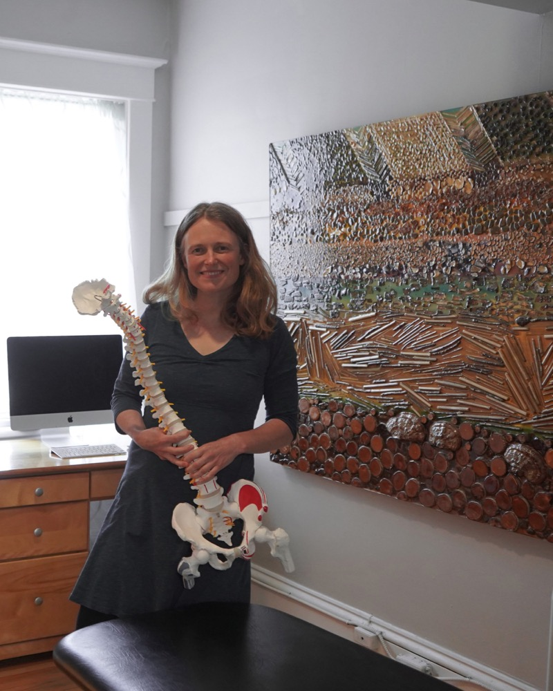
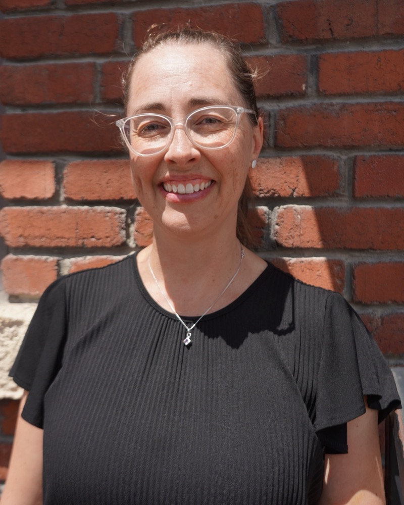
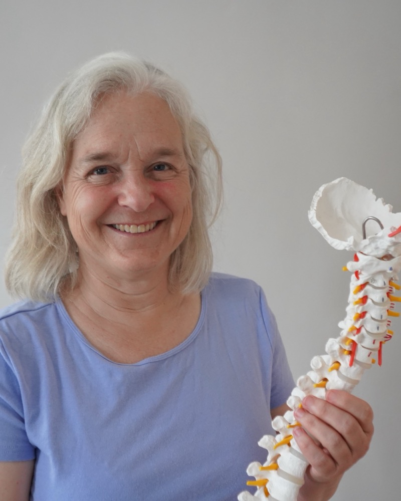
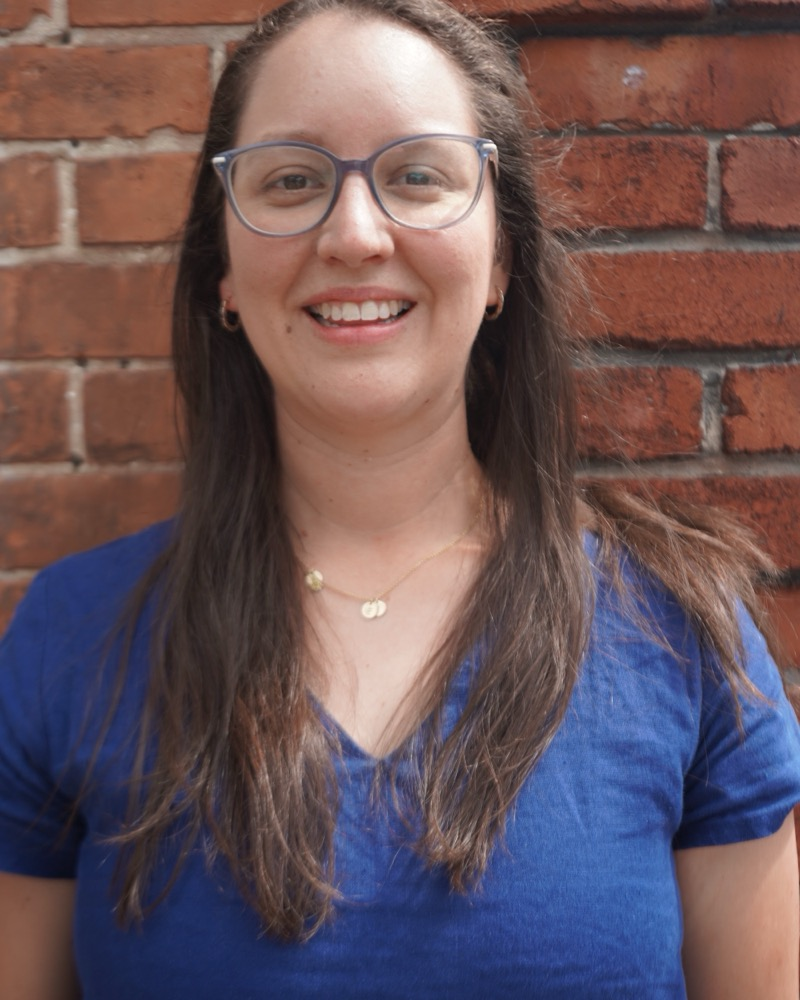
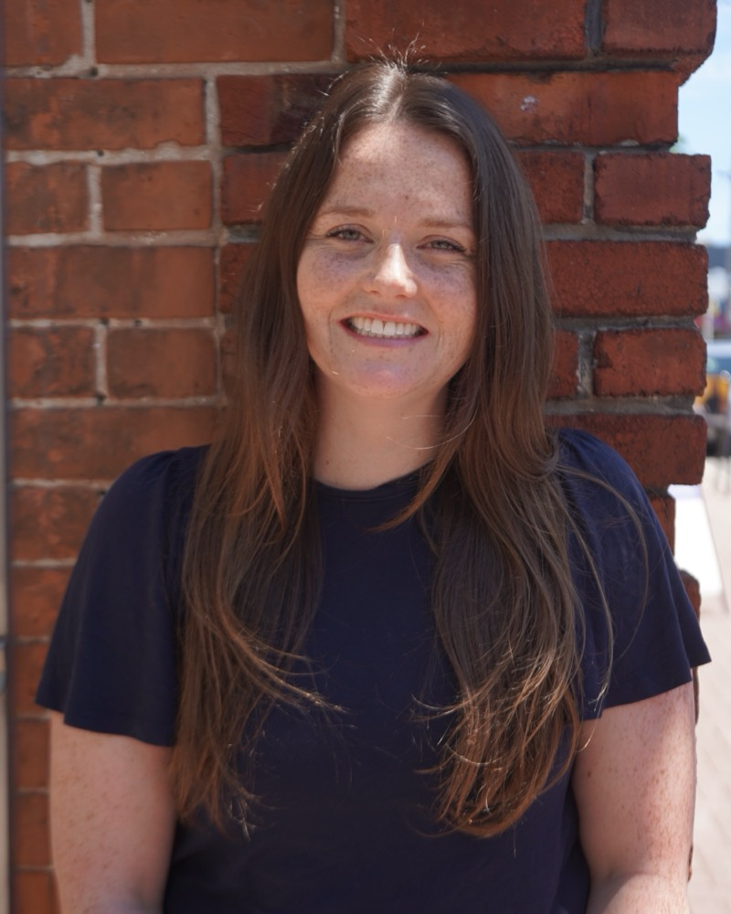

Get to know your physiotherapists
Six physiotherapists working closely together across orthopedic manual therapy, pelvic health, and pre & postnatal care.

Heather Grewar
BScPT, MScPT, FCAMPT, Orthopaedic Manipulative & Pelvic Health Physiotherapist
Heather founded Core Connections Physiotherapy in 2011, building on the integrated pelvic health and orthopedic program she began developing in Ottawa in 2008. The clinic moved to its current home in Westboro in 2014.
She studied physiotherapy at the University of Toronto, then spent a decade in postgraduate orthopedic manual therapy training, completing her Fellowship (FCAMPT) in 2008. A master's degree at Queen's led to her published paper on the link between core training and stress urinary incontinence, and later to introducing pessary fitting to Ontario physiotherapy in 2013, a practice she still mentors colleagues in today.
Affiliations
- Fellow, Canadian Academy of Manual and Musculoskeletal Physiotherapy
- Member, Canadian Physiotherapy Association (Orthopedic, Women's Health & Seniors divisions)
Outside the clinic, Heather is usually outdoors: hiking, cycling, backcountry camping, and cross-country skiing with her son Nikko. Services offered in English and French.

Monate Praamsma
MScPT, MSc.Kin, CAFCI
Currently on leave. Email reception to be added to her contact listGrowing up in the Ottawa Valley near Almonte, Monate saw firsthand how physiotherapy could transform recovery after her own sports and dance injuries. She holds a Master of Physiotherapy from the University of Ottawa and a background in Kinesiology, and has treated orthopedic, sports, neurological, and pelvic health patients across her career.
Her practice now focuses on pelvic health for all genders, with particular interest in pregnancy and postpartum recovery (pelvic pain, incontinence, prolapse, and sacroiliac pain) and building a safe return-to-activity plan after childbirth. She has developed and led several group physiotherapy classes, including Postnatal Core Restore and Prenatal Movement.
Monate is a parent of three and lives in Carlington, a short walk from the clinic, where she stays active exploring Gatineau Park with her family.

Susan Netherton
BSc(PT), Dip Adv Manip PT, FCAMPT
Sue's interest in physiotherapy began with her own involvement in sports. Over 35 years later, that's grown into a deep commitment to helping people stay active through sensible exercise, manual therapy, and education tailored to their goals.
She graduated with a Bachelor of Science in Physical Therapy from McGill University, completed her Advanced Diploma in Manual and Manipulative Physiotherapy in 2003 (a qualification covering both peripheral and spinal joint manipulation), and holds Level 1 Acupuncture Canada certification. She has also completed further training in vestibular rehabilitation.
Affiliations
- Fellow, Canadian Academy of Manipulative Therapy
- Acupuncture Canada certification
Outside the clinic, Sue cycles and swims in summer, skis in winter, sings alto in a choir, and is a self-described "struggling novice" cellist.

Galia Carranco Herrera
MScPT, Registered Physiotherapist, Certified Yoga Teacher
Galia's own years competing in sprint canoe and kayak (and the physiotherapists who supported her through training injuries) sparked her curiosity about how the body heals. She holds a Bachelor of Science in Kinesiology from Queen's University and a Master of Physiotherapy from the University of Ottawa.
She has pursued extensive continuing education in pelvic health, including deep core function, prenatal and postnatal recovery (including return to running), and physiotherapy for gender-diverse patients, alongside dry needling, joint mobilization, and chronic pain courses. She's also a certified yoga teacher and often weaves yoga principles into treatment.
Specialized services
- Pelvic health, trauma-informed care
- Gender-inclusive and gender-affirming practice support
- Functional dry needling
- Biopsychosocial approach to persistent pain
Galia is mom to her daughter Evelyn, and loves hiking, paddling, and camping as a family, including trips back to Mexico, where she was born. Services offered in English, French, and Spanish.
Pratyusha Kavuluri
Registered Physiotherapist
With over 13 years of experience, Pratyusha specializes in pelvic health, orthopedics, and sports physiotherapy. Raised around soccer (her father coached professionally) and a competitive swimmer and water polo player herself, she brings an athlete's understanding of recovery and performance to her practice.
She has published and presented internationally on topics including athletic varicose veins, exercise for knee osteoarthritis, and core stability training, and co-designed a novel ultrasound device for joint pain. Becoming a mother deepened her focus on pelvic floor rehabilitation across genders, with particular interest in supporting patients through perimenopause and beyond.
She's also a member of the EDS-ECHO society, supporting patients with Ehlers-Danlos syndrome and hypermobility spectrum disorders, and holds certifications in pessary fitting, functional dry needling, kinesiology taping, and cupping.
Outside the clinic, Pratyusha bikes along the Ottawa River, dances, travels, and is (by her own admission) rewatching The Office on a loop. Services offered in English and Telugu.

Kelly O'Connor
MScPT
Currently on maternity leave until 2027Kelly believes physiotherapy should hand people the tools to get back to what matters most. She holds a Master of Physiotherapy from the University of Ottawa, and alongside musculoskeletal and pelvic health care, has a special interest in dizziness, concussion, and other vestibular disorders.
Her postgraduate training includes Canadian Academy of Manual Physiotherapy Levels 1 and 2, McKenzie Method (lumbar and cervicothoracic), trauma-informed pelvic pain and incontinence courses, vestibular rehabilitation (introductory and advanced), and Complete Concussion Management Level 1.
Outside the clinic, Kelly is an avid road and mountain cyclist, hiker, camper, and skier, and enjoys experimenting with new recipes in her downtime.
Ready to book with our team?
Choose online, or call for help finding the right fit.